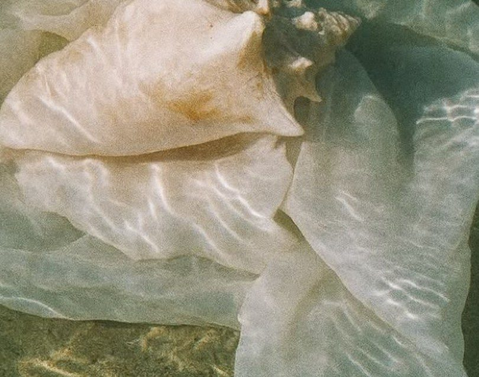
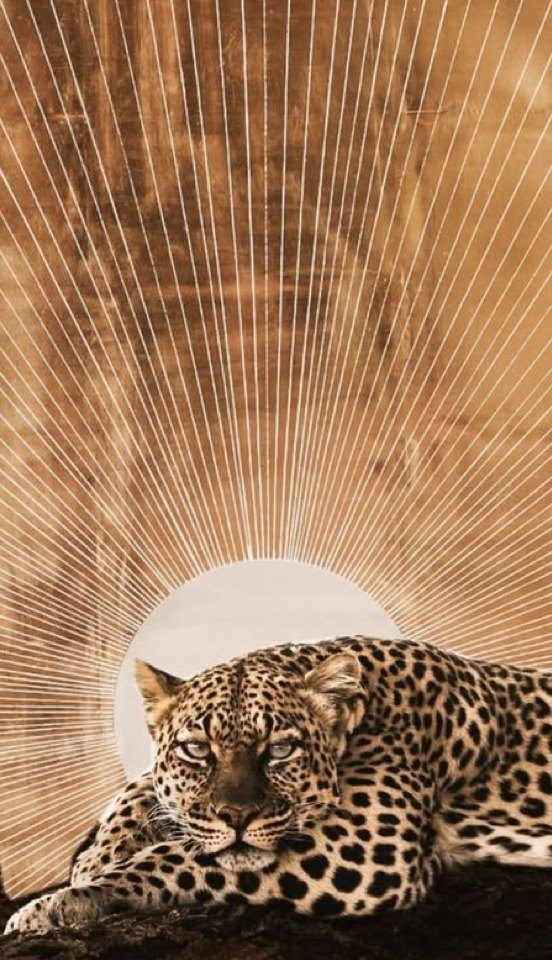
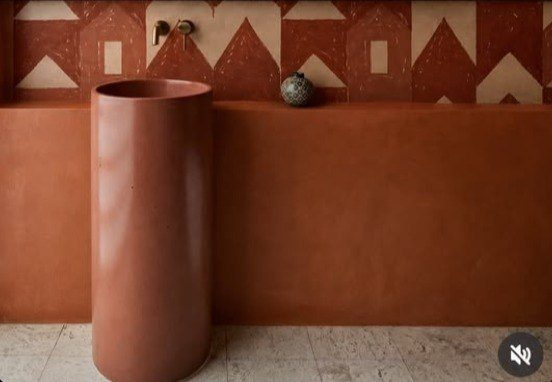
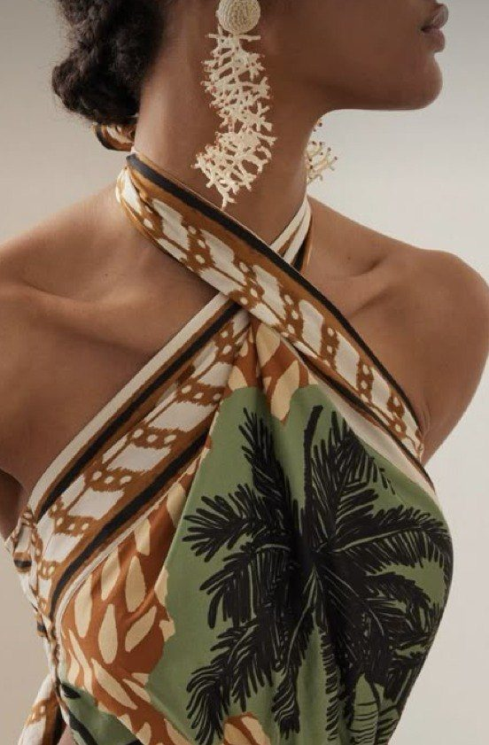
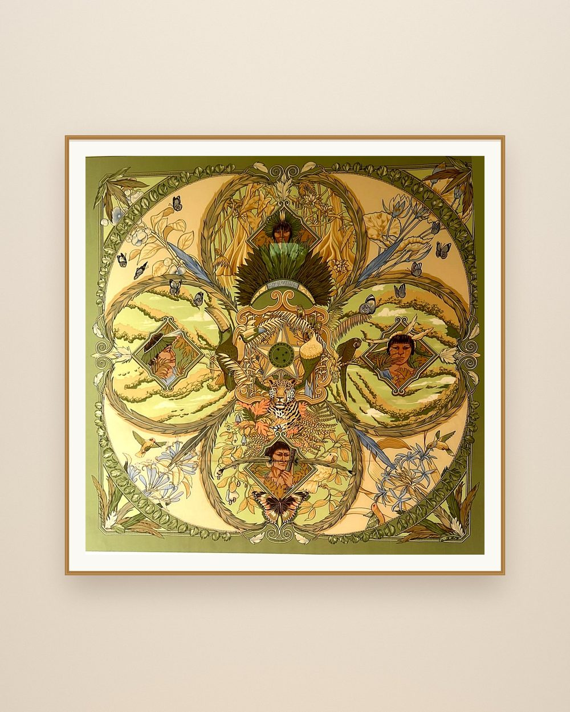
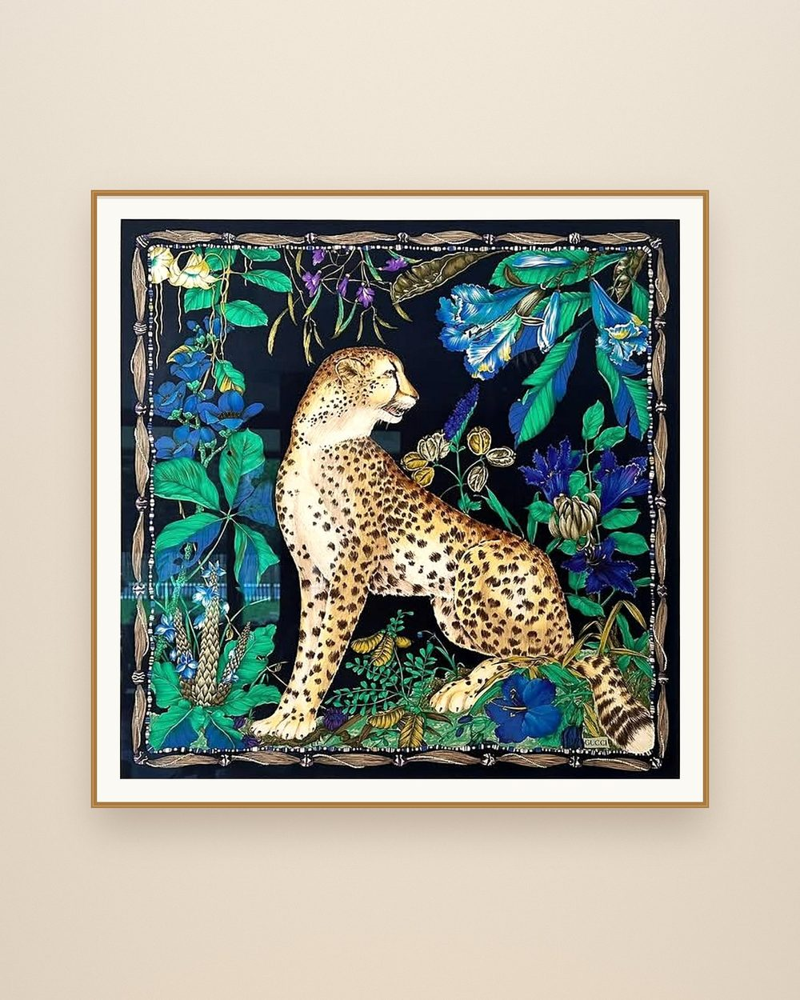
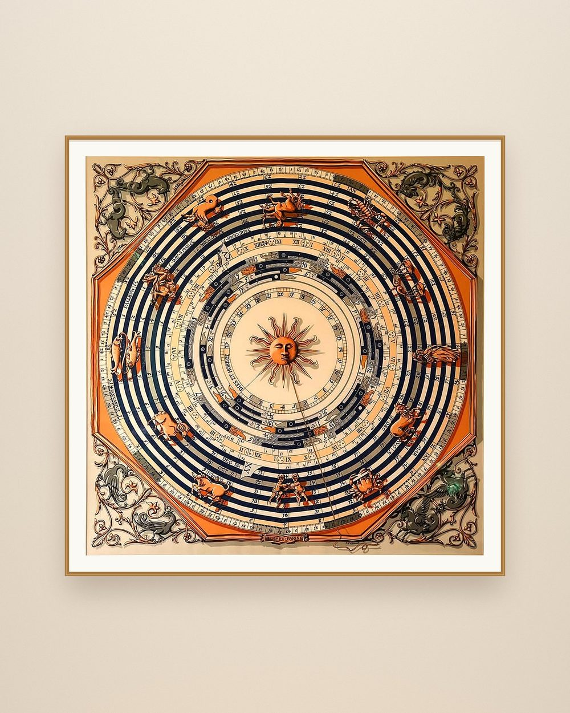

Framed silk, vintage pieces and kimonos.
I like so many things, why choose? Almost every day I get inspired to make something new. Everything is made with real materials, intention and care.

Real wood, real silk, made to last.
Ask about this piece →
Chosen for their materials and the energy they bring into a room.
Ask about these pieces →
Silk and organic cotton. Never polyester.
Ask about the kimonos →Silk that breathes. Field-tested in the garden, twice.
Be the first to knowNothing I create is synthetic. Everything is made with intention and care.Charlotte



Every piece has its own price. Send me a message and tell me which one you would like to know more about.
Ask about a pieceMessage meAbout everything I learn: astrology, energy at home and new pieces from the studio.